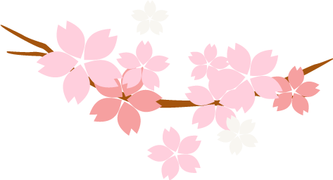
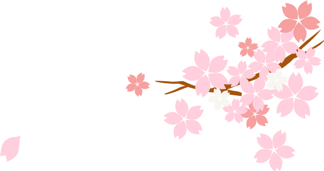
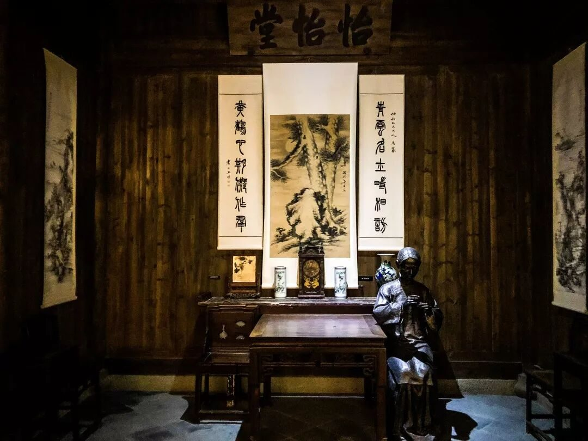
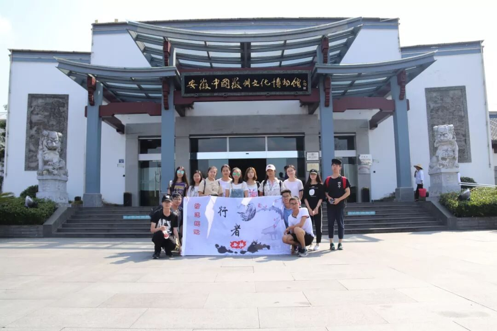

【素笺寄情·四】相遇即是下一次的开始

素笺寄情·四
相遇即是下一次的开始

每一次调研之行，都是身份的转换与叠加，放下手中的题库，改换上调研问卷；挥别了考试与重点，拾起队旗与责任，那场约定许久的文化之旅，终等你我去奔赴。那么多人来来往往，足迹所在，却仍是千百年前铺设的道路，上一期的停留，恰成为这一期的开始。
初识徽州

也曾到过许多地方，不乏惊鸿一瞥的时刻，日月交错后，便容易失落初见时的惊艳，但徽州却并非如此，历史与时光打磨下来的风味，非人力所能速成。小巷只能让它这样小着，逼仄却也尚能过人；日头也只能让它这样晒着，汗不能止却也不至于过分狼狈；你可携着热风蝉鸣，细细地打量着，揣度着那些不曾泯灭的文化。
那些昔日的光辉，历经风吹雨打，留下点滴遗迹，最珍贵的莫过于代代沿袭的匠人技艺。城墙可以被推倒，疆域可以再次划分，唯独技艺不死，只有有人在，便可一直留存。或许别处也有宣笔，只是未必有这里纸墨相依的情怀，或许别处也有宣纸，却无这里得天独厚的光洁棉韧，至于徽墨更是独属于这里的烙印。它们也不再仅仅是一门工匠的术法，经历代人的坚守，而被赋予了新的内涵与生命。
走马宏村
余秋雨先生说：“对于文明非人类性化所带来一切灾难的爆发式反抗，就是回归自然。”在过分拥挤和嘈杂的今天，我们更渴望一方天地，供自在呼吸。但梦中的栖息地，却早已失却了往日的静谧，喧哗与浮躁成为一个又一个原住民离开的理由。我们必须承认，真正能够使我们内心平静的，确是最远离我们世俗沾染的自然，人潮汹涌，文化密集，生活便利的宏村，早已成为一座我们想要逃离的都市。
我更希望将宏村一分为二，那半属于游客，这半属于原住民。在景区热点的古建筑，更像是迟暮的老者，又被世俗的烟火气，熏黑了面庞，明知自己已不适合这样的亮相，却又盛情难却，勉强上场，任凭人声掩盖了他的低语。但向更深处漫游，你可以看到另一个新天地，窄巷陋屋，自在闲居，这里是真正原住民所在之地。躲得那般隐秘，塞得这样拥挤，一墙之隔，不漏痕迹。可触摸的空，可谛听的静，真正的清净结庐在人间。
博物馆中游

有人说展示性的文化，堆积的过于密集，会让人倍感疲累。但在博物馆内你绝不会有这样的感觉，已提前有人为你理清了脉络，排列出次序，你所要做的只是填补你饥渴的头脑与心灵。这里也是数千公里跋涉后，所能感受文化最浓郁的所在。无论你来或不来，它都在那里。
史书可能被史官涂抹，真相难辨，但但那些千百年来沉默如初的文物，始终忠实可靠。它们会向你倾诉，当时的文化是怎样的隐然超脱，也为你解答那些难以阐述明白的概念。懒散与无知，在别处尚能闭眼放过，但于此处确实不能，没有前期的了解与准备，那些篆刻于古物细微处的传说，那些闪烁在漆盒中的螺钿，都成为了漫游中的走马观花，难以真正赏得其风采。
一路行来，有过惊喜，也有过遗憾，我们来过，我们记得，但我更希望我们不仅仅是途径过，更在意过，深刻过。

图片｜沈华，盛暘
文案｜潘雯雯
排版｜潘雯雯
审核｜应雨珊，潘雯雯
长按二维码关注我们